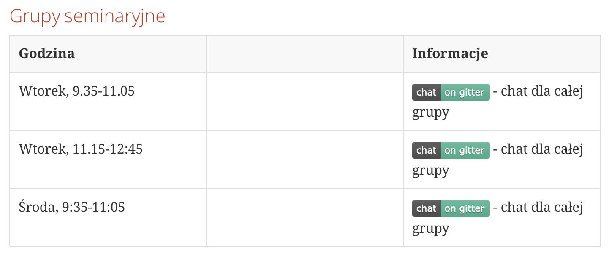
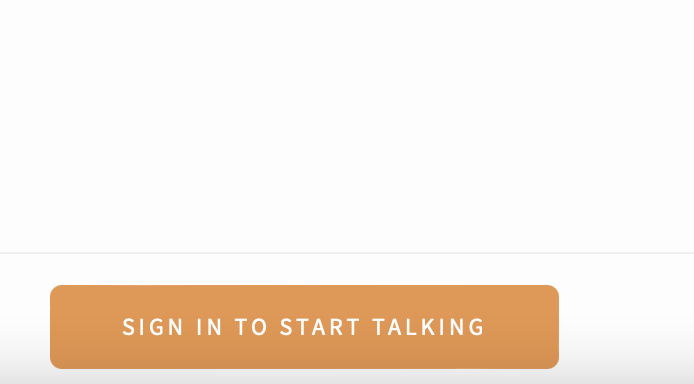
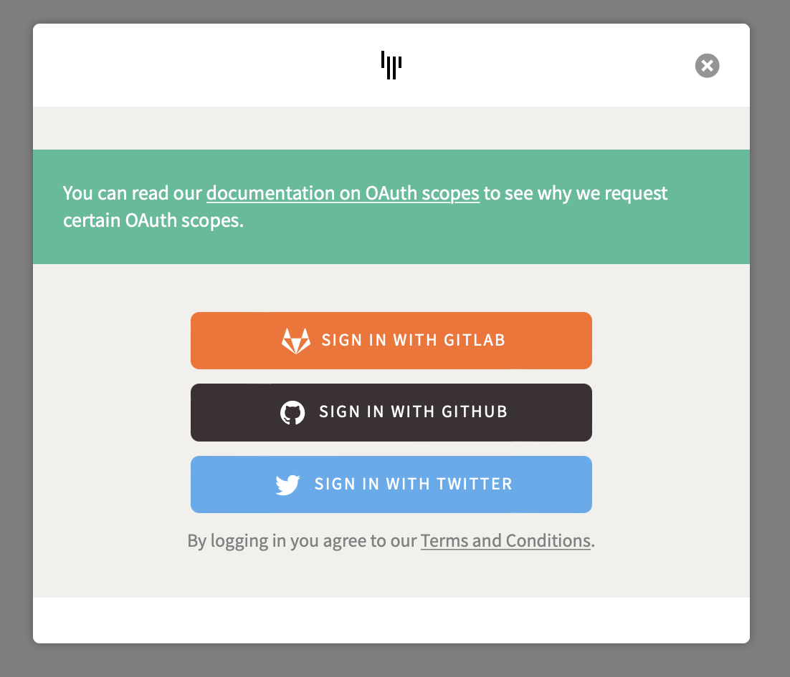

Seminarium 2
Krzysztof Grochot
grochot.github.io
22-23.03.2022r.



05-06.04.2022r.
1. Rozwiązania chmurowe a aplikacje webowe, Amazon AWS, OpenStack
2. Współczesne trendy aplikacji webowych, Progressive Web Applications, Aplikacje Hybrydowe, Single Page Application
cloud based web based applications
Progressive web application---referencje
SPA---referencje